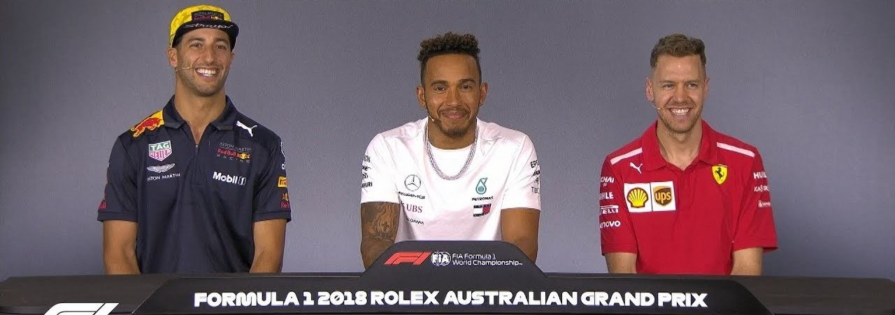
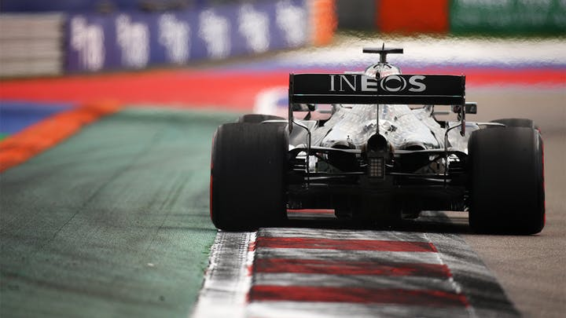
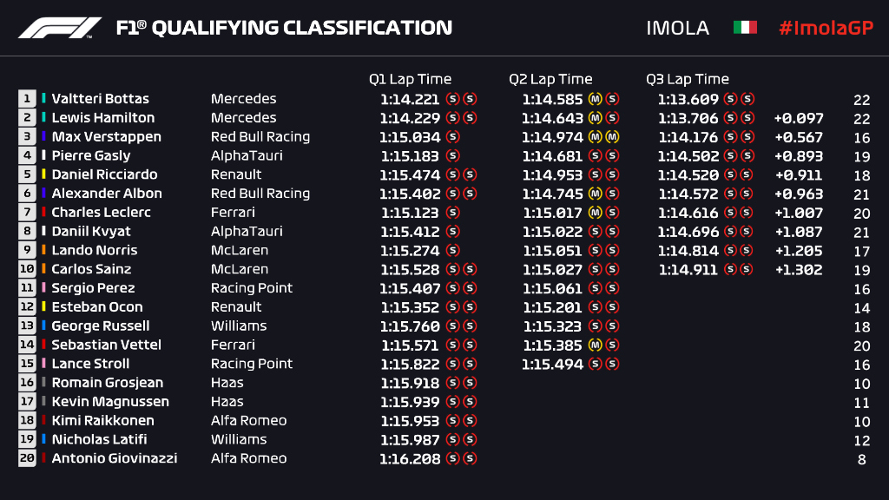
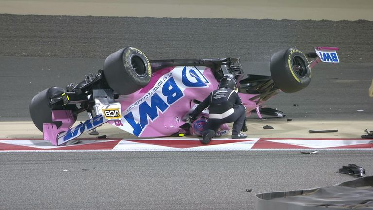
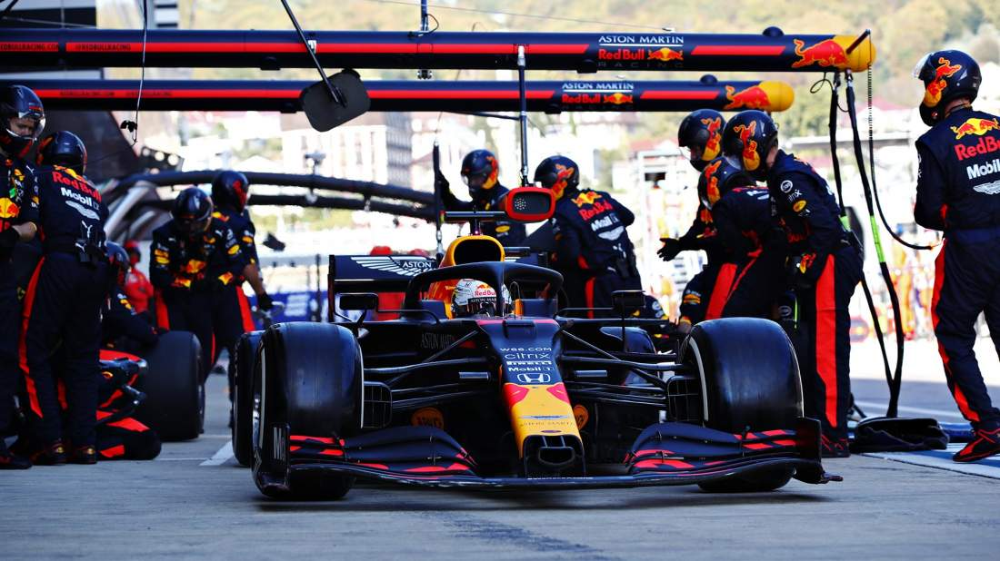

Een Formule 1 race duurt meestal 90 minuten tot twee uur, maar de voorbereidingen voor de race beginnen al veel eerder. In in race week zijn de coureurs meestal al op maandag op de betreffende plek aanwezig. Dan trainen en ontspannen ze. Vanaf donderdag begint het race-weekend en heeft elke dag zijn eigen functie, tot de race op zondag. Welke functies dat zijn en wat ze precies inhouden, kan je hier lezen.
Donderdag: media day
De eerste dag is het mediadag. Op deze dag worden er allerlei pre-race persconferenties en interviews gegeven door de coureurs en team principals. Hierin kijken ze vooruit op de race en delen ze hun verwachtingen. Ook zijn er sign-sessies waarin de coureurs hun merchandise signeren zodat het in het weekend verkocht kan worden. De donderdag is de minst belangrijke dag, omdat er nog niet geracet wordt. Er is dan ook nog geen publiek aanwezig.

Vrijdag: free practice 1 en 2
Na donderdag komt natuurlijk vrijdag. Op deze dag zijn er twee vrije trainingen van anderhalf uur, een in de ochtend en een in de middag. In deze trainingen kijken de teams hoe hun auto rijdt en wat er eventueel nog aangepast of verbeterd kan worden. Ook is dit de gelegenheid voor de coureurs om de baan te testen en er bekend mee te worden. De coureurs kunnen zoveel rondjes rijden als ze willen, maar meestal zijn ze niet de hele anderhalf uur op de baan. Op basis van de vrije trainingen kunnen de eerste analyses en voorspellingen voor de race en kwalificatie worden gemaakt. Er wordt bij de trainingen een ranking gemaakt op basis van de snelheid van elke coureur. De snelste tijd komt bovenaan. Er valt hier echter nog niks mee te winnen; het is puur voor het verzamelen van gegevens.

Zaterdag: qualifying
Zaterdag is de eerste echt belangrijke dag. Eerst is in de ochtend free practice 3, de laatste vrije training van het weekend. Die duurt een uur. Daarna vindt de kwalificatie plaats. De kwalificatie bepaalt vanaf welke plek de coureurs starten op zondag. Dit gebeurt op basis van snelheid; als je de snelste tijd neerzet in één rondje, haal je pole position (de eerste plek). Meestal gaan de betere teams pas wat later de pits uit, want zij halen toch wel een goede tijd. De teams die minder goed zijn, gaan meestal al vanaf het begin rijden, zodat zij alle tijd hebben om hun snelste ronde neer te zetten. Als de geblokte vlag naar beneden gaat, wat betekent dat de sessie of race afgelopen is, mogen de coureurs wel hun rondje afmaken, maar geen nieuw rondje beginnen. De kwalificatie bestaat uit drie sessies. Na elke sessie worden de tijden die gereden zijn geschrapt en begint iedereen weer op nul. Hier zie je een voorbeeld van een kwalificatie-ranking:

Q1 is de eerste ronde. Hij duurt 18 minuten en wie er gedurende die 18 minuten op plek 20 tot en met plek 15 staat, wordt geëlimineerd. Dit zijn dus meestal ook de wat minder goede teams. De plek waar deze coureurs op eindigen, is hun startplek bij de race.
De 15 coureurs die er nog in zitten, gaan in Q2 weer hetzelfde doen als in Q1. Ze moeten weer de snelste tijd neerzetten zodat ze niet geëlimineerd worden en zondag vanaf een goede plek kunnen starten. Q2 duurt 15 minuten en als deze tijd voorbij is, vallen weer de vijf langzaamste coureurs uit. Ook hun plek op de grid van zondag staat dan vast.
Na een korte pauze begint de laatste sessie, Q3, van 12 minuten. Dit wordt ook wel de top 10 qualifying genoemd, aangezien hier de 10 snelste coureurs strijden om de beste grid-positie. In deze ronde vallen er geen mensen uit. Na de twaalf minuten krijgt coureur met de snelste lap time de eerste plek. Hij start dus vanaf nummer een op zondag. Na Q3 is de kwalificatie afgelopen.
Zondag: de race
En dan is het op zondag zover: de race. De race begint meestal rond twee of drie uur 's middags. Soms zijn er afwijkingen, omdat de lokale tijd niet altijd gelijk loopt met de Nederlandse tijd. Bij de race draait het niet om de snelste tijden, hier gaat het erom dat je zoveel mogelijk andere auto's inhaalt zodat je zo ver mogelijk bovenaan eindigt. De top drie coureurs komt op het podium en krijgt een beker en de meeste punten. De punten gaan als volgt: 25 voor eerste, 18 voor tweede, 15 voor derde, en dan achtereenvolgens 12, 10, 8, 6, 4, 2, 1.Ook is er nog een extra punt te behalen als je de snelste raceronde rijdt van de hele race.
Er zijn ook penalty's die je kan krijgen als je iets fout doet, bjivoorbeeld als je een crash veroorzaakt of te snel rijdt in de pit lane. Dan worden er bijvoorbeeld 5 seconden van je tijd afgetrokken of moet je een stop-go pitstop doen. Dan moet je een paar seconden blijven staan in de pits voordat je de pitstop mag hervatten. De straffen zorgen er dus voor dat je een paar plekken omlaag gaat.

Een enorm belangrijk ding tijdens de race zijn de pitstops. Tijdens een pitstop worden er nieuwe banden onder de auto gezet, want die gaan snel kapot bij een snelheid van 300 km/uur. Er zijn tijdens de race drie soorten banden beschikbaar als het niet regent: soft (rood), medium (geel) en hard (wit). De banden moeten goed gekozen worden, want er is maar een beperkt aantal sets van iedere compound beschikbaar en bij elk circuit past weer een andere band. Daarom worden er allemaal strategieën bedacht. Een race kan een eenstopper, tweestoper of driestopper zijn. Dat is het aantal keren dat er een pitstop wordt gemaakt. Dit kan natuurlijk ook vaker zijn, maar dat is alleen als er een crash plaatsvindt of als er bijvoorbeeld een lekke band is.
